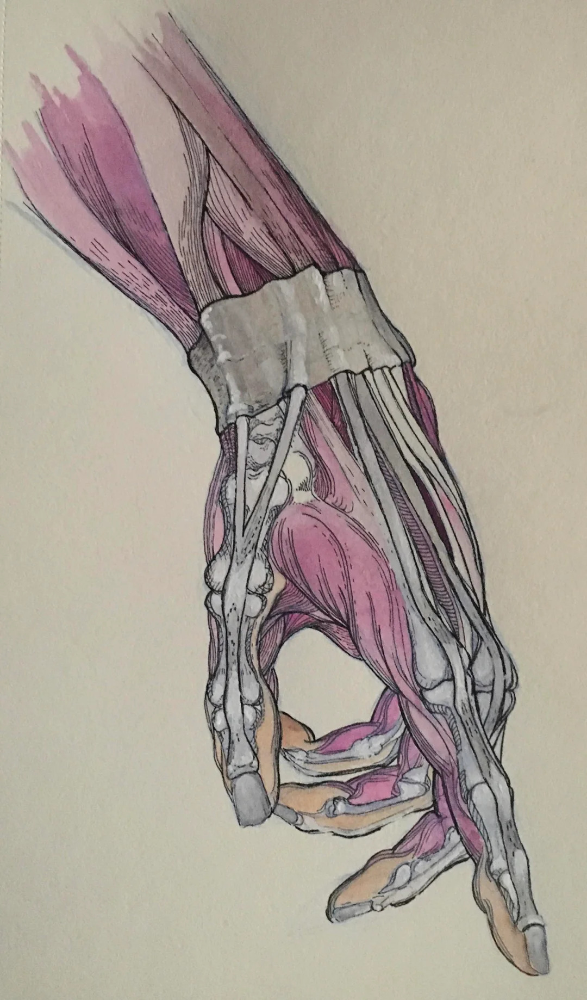
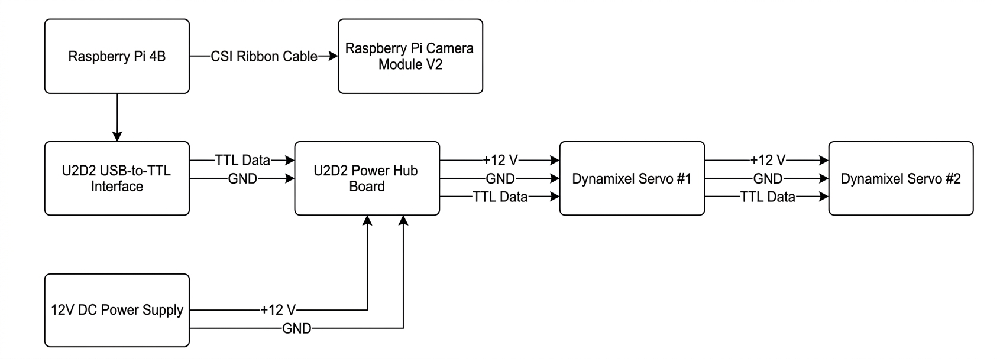
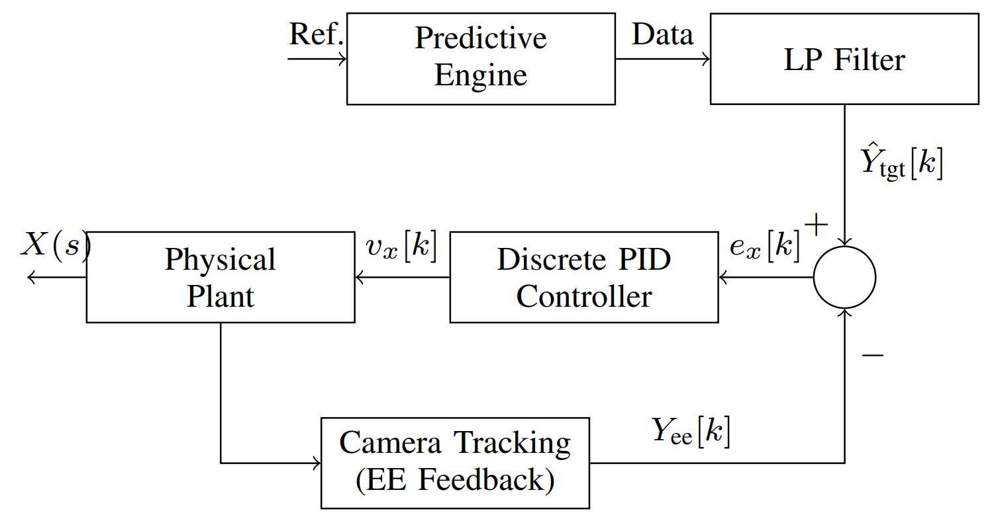
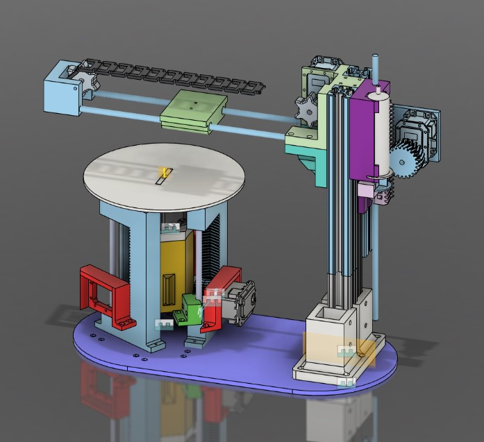
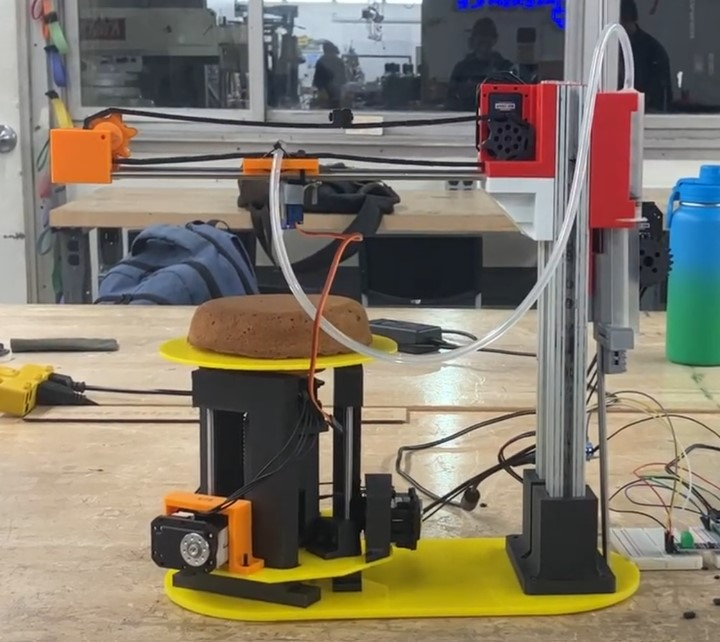
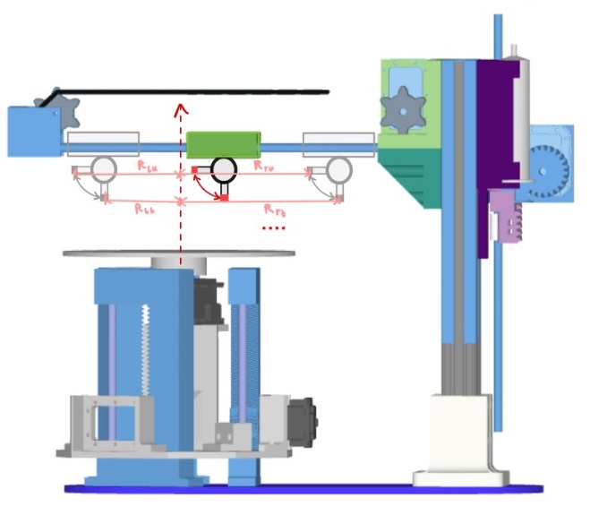
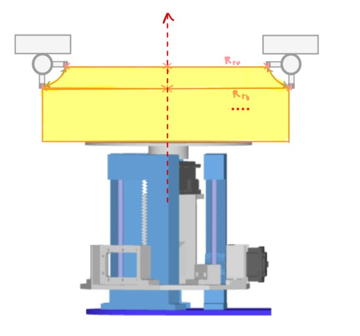
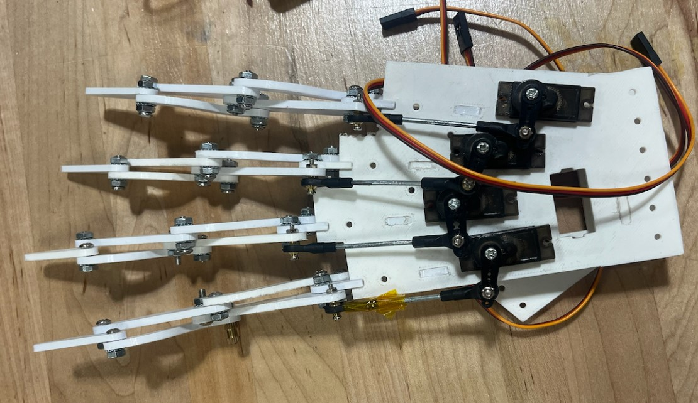
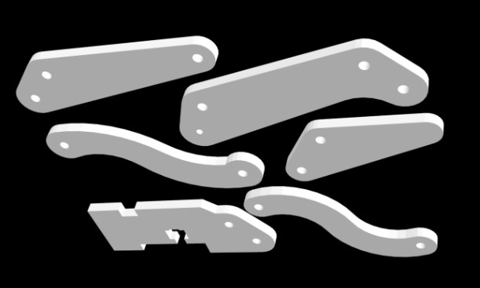
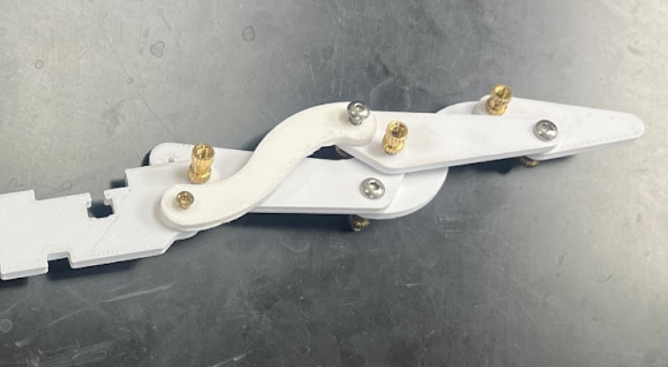

I'm a UCLA graduate with an M.S. in Mechanical Engineering ('26), specializing in robotics and mechatronics, and a B.S. in Bioengineering ('25), focused on orthopedics, bionics, and medical device design. I've also completed tissue engineering research, including a small-scale bioreactor I led in collaboration with the UCLA Medical School.
Alongside my studies, I've worked in surgical equipment manufacturing, CNC machining, and genome sequencing automation. Today I'm focused on robotics and automation, building systems where precise motion, sensing, and control come together.
I also served as a student liaison during my time as an undergraduate and graduate student at UCLA, working directly with my department and ABET to gather and synthesize feedback on the curriculum. 16 pages and 50+ peer signatures later, I presented my proposals to internal and external committees, with approved changes integrating in Fall 2026.
Outside of engineering and academics, I'm passionate about hiking, cooking, climbing, and learning new languages! Feel free to reach out at spencerkelly25@g.ucla.edu to connect.

Built a 2-DoF XY gantry air-hockey defender with a Raspberry Pi 4B: an HSV vision pipeline with a custom calibration tool for real-time puck tracking and prediction, feeding a decentralized task-space PID controller with signal filtering, windup clamping, and behavioral logic checks driving Dynamixel servos. See GitHub links to the code used and the final report.


Designed and validated a functional ECG/EMG circuit from first principles using an INA826 instrumentation amp, RC network, and ESP32-S3. Applied FFT and a brick-wall low-pass filter to isolate cardiac signals, visualized in a custom 3-pane Processing interface (raw signal, filtered signal, frequency domain). See video(s) for a live demo of each.


A 5-DoF manipulator (3 rotational, 2 linear joints) nicknamed CHRISTMAS, designed to use inverse and forward kinematics to apply icing to cakes of various sizes, with customizable messages included! Implemented electronics and task programming, driving Dynamixel MX-28AR servos via an ESP32, with custom packet-level functions for real-time trajectory behavior using position and velocity control.
More details on the mechanisms, inverse and forward kinematics, and simulation work are attached in the report link below.




Developed a simple fingertip recognition program with Processing, RP2040 PicoW microcontroller, and OpenCV (Java-based). Built and tuned a mechanical hand with 4 servo-driven fingers to mimic detected movements, incorporating digital debouncing to eliminate false detections.
Addressing the electrical constraints of running four servos at once, I created a dedicated power supply using a USB-C input paired with a step-down buck converter. This delivered the necessary 2.0 A peak current to ensure synchronized actuation.

Led a team building a dual-mechanism bioreactor promoting cell differentiation via stretch and perfusion. Ran COMSOL simulations to evaluate flow rate and shear stress in soft tissue and designed a linear track with self-lubricating bearings.